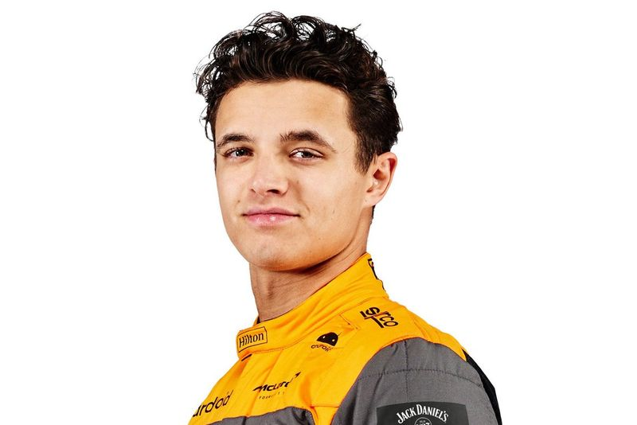

Oscar Piastri
Oscar Piastri
Born in Melbourne, just a stone’s throw away from the Australian Grand Prix venue, a young Oscar Piastri’s dreams of one day racing in Formula 1 were ignited by the sport’s star drivers roaring around his local streets, otherwise known as Albert Park. But it would take huge commitment and sacrifice to turn that dream into a reality, with a move to Europe – made by the likes of fellow countrymen Mark Webber and Daniel Ricciardo before him – the only way to go up against the best and catch the attention of the sport’s decision-makers.
Lando Norris
Lando Norris may not be named after Star Wars rebel Lando Calrissian - his Mum just liked the moniker - but he has flair and fighting spirit in bountiful supply.McLaren had the British teenager on their books for two years before fast-tracking him into F1’s galaxy of stars in 2019. A firecracker in his junior career, with a penchant for pole positions and wheel-to-wheel tussles, Norris didn’t let them down. Paired with the highly-rated – and far more experienced – Carlos Sainz, his rookie season was impressive, Norris edging the Spaniard in their head-to-head qualifying battle, scoring points 11 times, and only narrowly missing out on a top-10 championship placing.A maiden podium came in 2020, with more following in the subsequent two seasons – he narrowly missed out on a win at Russia 2021 – as he dominated another more senior team mate, Daniel Ricciardo, to firmly establish himself in F1’s top tier.